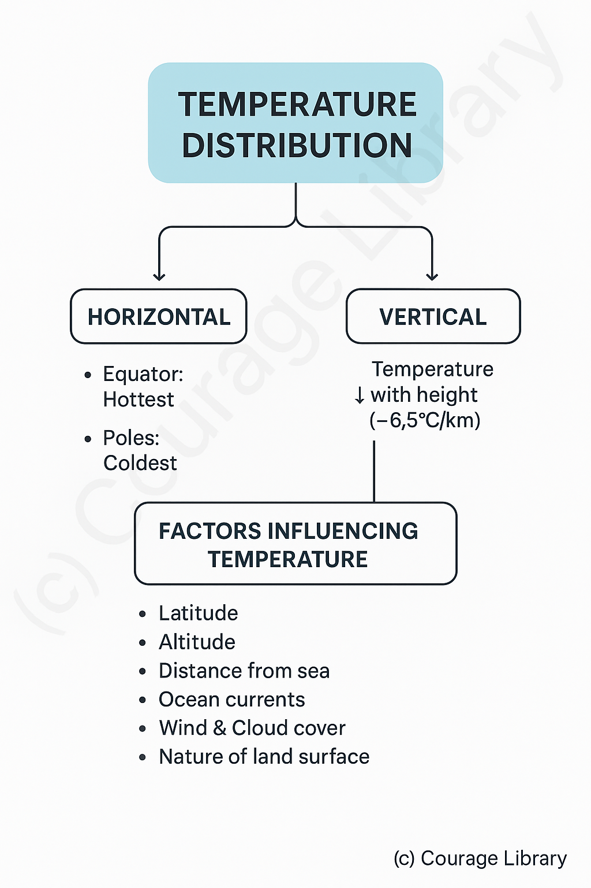
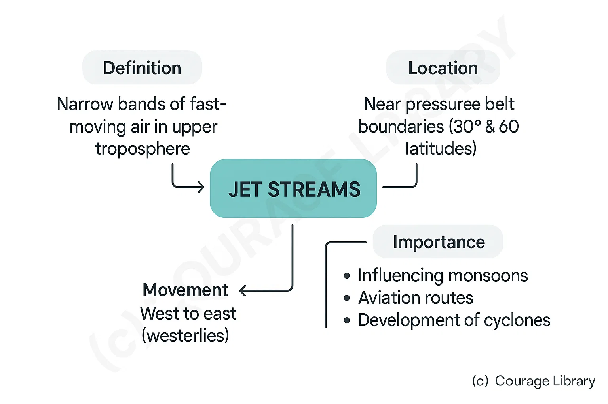

SSC CGL - Detailed Guide 2025
Self-Paced Course
Climatology
Reference: Lucent GK, NCERT Class 6–12
Atmosphere: Composition and Structure
Composition of the Atmosphere
| Gas | Percentage by |
|---|---|
| Nitrogen (N₂) | 78.08% |
| Oxygen (O₂) | 20.95% |
| Argon (Ar) | 0.93% |
| Carbon Dioxide (CO₂) | 0.04% |
| Others (Ne, He, CH₄, O₃, etc.) | 0.01% |
Water Vapor and Dust Particles are variable and significant for weather processes.
Structure of the Atmosphere
| Layer | Altitude | Key Features |
|---|---|---|
| Troposphere | 0-12 km | Weather phenomena occur here; temperature ↓ with altitude; densest layer |
| Startosphere | 12–50 km | Contains ozone layer; temperature ↑ with altitude; ideal for flying aircraft |
| Mesosphere | 50–80 km | Coldest layer; meteors burn here |
| Thermosphere | 80–500+ km | Temperature ↑ sharply; contains ionosphere (radio communication) |
| Exosphere | 500+ km | Outermost layer; merges with outer space |
Heat Budget & Temperature Distribution
Heat Budget of Earth
The balance between incoming solar radiation and outgoing terrestrial radiation.
| Component | Percentage |
|---|---|
| Incoming solar radiation (Insolation) | 100% |
| Reflected by atmosphere & clouds | 35% (Albedo) |
| Absorbed by atmosphere & clouds | 14% |
| Absorbed by Earth's surface | 51% |
Outgoing radiation is in the form of long-wave (infrared) radiation.
Temperature Distribution
- Horizontal: Equator is hottest, poles are coldest.
- Vertical: Temperature generally decreases with height (~6.5°C/km).
-
Factors influencing Temperature
- Latitude
- Altitude
- Distance from sea
- Ocean currents
- Wind & Cloud cover
- Nature of land surface

Winds: Planetary, Seasonal, Local
Planetary Winds (Permanent)
| Type | Direction | Region |
|---|---|---|
| Trade Winds | NE in Northern Hemisphere, SE in Southern Hemisphere | 0°–30° Latitude |
| Westerlies | SW in Northern Hemisphere, NW in Southern Hemisphere | 30°–60° Latitude |
| Polar Easterlies | From poles to sub-polar regions | 60°–90° Latitude |
Seasonal Winds
-
Monsoons:
Winds that change direction with season.
- Summer Monsoon (June–Sept): From ocean to land (SW monsoon)
- Winter Monsoon (Oct–Feb): From land to ocean (NE monsoon)
Local Winds (Short-lived, region-specific)
| Wind | Location | Effect/ Feature |
|---|---|---|
| Loo | North India (Summer) | Hot and dry |
| Chinook | Rockies (USA/Canada) | Warm, snow-melting wind |
| Foehn | Alps (Europe) | Warm and dry |
| Mistral | France | Cold and dry |
| Harmattan | West Africa | Dry, dusty, blows toward the sea |
Pressure Belts & Jet Streams
Major Pressure Belts
| Belt | Latitude | Nature |
|---|---|---|
| Equatorial Low | Around 0° | Low pressure (rising air) |
| Subtropical High | ~30° N & S | High pressure (descending air) |
| Subpolar Low | ~60° N & S | Low pressure |
| Polar High | Around 90° N & S | High pressure (cold, dense air) |
Wind moves from high to low pressure. Coriolis force deflects direction.
Jet Streams
- Narrow bands of fast-moving air in upper troposphere.
- Found near boundaries of pressure belts (especially 30° & 60° latitudes).
- Move west to east (westerlies).
-
Important for:
- Influencing monsoons
- Aviation routes
- Development of cyclones

Cyclones: Tropical and Temperate
Tropical Cyclones
| Feature | Details |
|---|---|
| Location | 5°–20° latitude (rare near Equator) |
| Origin | Warm oceans (>27°C), low pressure |
| Structure | Eye (calm), eyewall (maximum wind) |
| Speed | Slow (~15–30 km/h) |
| Examples | Cyclone Fani, Cyclone Yaas (India) |
| Regional Names | Hurricane (USA), Typhoon (Asia), Cyclone (India), Willy-Willy (Australia) |
Temperate Cyclones
| Feature | Details |
|---|---|
| Location | 35°–65° latitude (westerly belt) |
| Origin | Along polar front, between warm and cold air masses |
| Structure | Frontal system: warm front & cold front |
| Speed | Faster (~60 km/h) |
| Duration/Spread | Lasts longer and covers larger area than tropical cyclones |
| Weather Caused | Cloudy skies, moderate to heavy rainfall |
Precipitation Types
Main Forms of Precipitation
| Type | Definition | Condition |
|---|---|---|
| Rain | Water droplets falling from clouds | Common in tropical and temperate zones |
| Snow | Ice crystals falling when temperature < 0°C | Cold regions, high altitudes |
| Hail | Ice pellets formed by strong updrafts in cumulonimbus clouds | Common in thunderstorms |
Types of rainfall (by mechanism)
| Type | Cause | Region |
|---|---|---|
| Convectional | Intense heating of land, air rises & cools | Equatorial regions |
| Orographic | Moist air forced up by mountains | Western Ghats (India), Andes |
| Frontal | Warm and cold air masses meet | Temperate cyclones, mid-latitudes |
Developed By Roopasree Challa
Next
Start Your SSC CGL Journey Now!
Join Courage Library to experience disciplined study and expert support.
Be a Couragian!